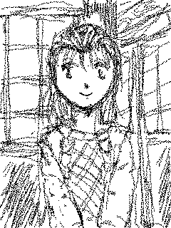
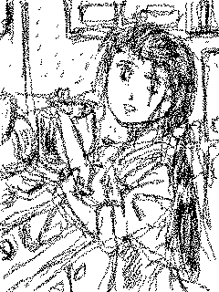
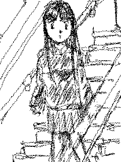
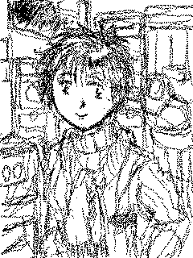
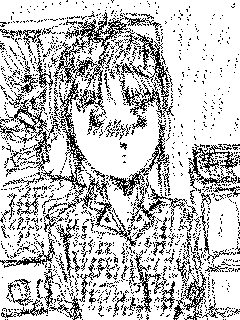
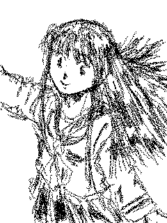

４人目の姉妹
文 ：ことぶきひかる
ＣＧ ：Hikaru-Kotobuki
SpecialThanks： ＮＤＣ−ＳＳ
いつのまにか、家並みが田圃や畑に変わり，その上には，うっすらと雪がかぶ
り始めていた。
ハンドルを握る手に力が入り、アクセルを踏む足の力が弱まって，スピードが
２割ほど遅くなる。
今朝方降った新雪の上を，異なる足跡が残る前庭に、裕一は車を滑り込ませた
。
「ごめんくださーい。」
玄関に足を踏み入れる。
「あ、裕一お兄ちゃん，いらっしゃい。」
裕一を出迎えたのは、癖のある髪を肩の少し下まで伸ばした中学生くらいに見
える少女だった。

「こんちわ、清華ちゃん。これ、お土産。」
榊家は、裕一にとって、母方の実家にあたる。
京華，彩華，清華の３人は、裕一の母親の姉の娘、すなわち従姉妹になる。
ちなみに、京華は２３歳，彩華１９歳、清華１５歳。
今でこそ、こうやって、足を運べる場所になったが、裕一の両親の結婚の際に
は、父方の実家と共に，真っ向から反対したらしい。
結局、２人は駆け落ちした。
事故に遭う直前、父がぽつりと漏らした話だと、結婚以前に、２人の交際その
ものを、拒絶するような雰囲気があっだようだ。
もっとも、裕一の誕生により、榊家とは和解が成立した。
外孫とはいえ、２人目、それも初の男児となれば、気にならないはずがない。
父方の実家とは、結局，疎遠になってしまったものの，榊家とは、かなり親密
な交際が続けられた。
一人っ子の裕一にとって、榊家の姉妹は、実の姉妹同然だった。
実際、長女の京華は、面倒見のいい性格と言うこともあって，裕一を可愛がっ
てくれた。
昨年、両親が亡くなったときも、何も分からない裕一に代わって、葬儀の準備
を整え、保険金の受け取りを済ませ、遺産の相続や家の残ったローンなどに決着
をつけてくれたのも京華だった。
裕一は、京華に恩義を感じており、それも，月に一度は榊家に脚を運ぶ理由の
１つだった。
「はーい、お待たせ。」
髪をうなじの辺りでまとめた，エプロン姿の京華が、蓋のハジから湯気のあが
る土鍋を持って、居間に現れた。
彩華が手際よく、炬燵の上を片づけ、鍋しきを中央に置く。
それに続いて、清華が，ウドの胡麻胡桃味噌和えやワカメと胡瓜の酢の物、そ
して徳利とお猪口を並べたお盆を運んできた。
ストーブにおかれたやかんの中では、お銚子が２本、次の出番を待っている。
一人暮らしで、つい外食やコンビニ弁当が多くなる裕一の健康を気遣ってか、
鍋の中身は、野菜や魚がふんだんに入っていた。
のんびりした雰囲気のある京華だったが、実は、いつも肝心なところは押さえ
ている。
今日の料理も、彼女のそんな気遣いが伺えた。
連日、１人での食事ばかりの裕一にとって、榊家の食卓は、家族の食卓だった
。
「けど、京華さん、本当に、料理うまいですね。でも、これだけの腕があるの
に、なんで，結婚しないんですか？」
「結婚はしたいけど、いろいろあってね。彩華や清華のこともあるしね。」
「あー、お姉ちゃん。あたし達を理由にするなんてヒドイよ。」
「そーそー。」
彩華と清華が揃って口を尖らす。
だが、京華が結婚しないことは，それを口にした裕一にも不思議なことだった
。
性格もよく、家事全般がこなせる妙齢の女性が、なぜ独り身なのか。
やはり、２人の妹のことが気にかかるのだろう。
とはいえ、一番下の清華が２０歳になる頃には、京華は、３０近い。
いくら何でも、数年のうちに、結婚を考えるべきだろう。
職場や学校の話題を話しながら，ゆっくりと１時間ほどかけて、夕食は終わっ
た。
「裕一さん、先にお風呂に入りません？多分、私たちは長くなってしまうから
。」
京華に勧められて、裕一は風呂場に向かった。
榊家の湯船は、平均的なものの２倍近いサイズで、裕一の身体でも、脚を伸ば
して，ゆったりと浸かることが出来る。
裕一が子供の頃は、まだ薪で沸かしていたが、時代には逆らえず、今では電気
温水式に変わっているが、湯船の大きさは健在だ。
不意に、京華や彩華と一緒にお風呂に入っていた頃が懐かしくなる。
風呂場からでると、彼が、入っている間に洗濯を済ませたらしい下着と、パジ
ャマが置かれていた。
交替でお風呂に入る京華達とテレビを見たり、ゲームに興じているうちに、年
代物の柱時計が，１２回鳴った。
「そろそろ、寝ましょう。もう、日付が、変わっちゃったし。」
「えー，明日、日曜なんだから、もう少しいいじゃない。」
京華の言葉に，清華が、不満の声を漏らす。
「エーじゃないの。清華、あなたも，受験生なんだから、もう少し自覚を持ち
なさい。」
そういわれては、反論のしようもない。
口を尖らせながらも、清華は、炬燵の上を片づけ始める。
客間に敷かれた布団にもぐり込むと、酒のためか、裕一は、落ちていくように
眠りについた。
目が覚めると、そこは真っ暗だった。
だが、その暗さが，何か視界が覆われているためなのか、それとも裕一が置か
れている場所そのものが暗いためなのか、判断できない。
いくら目を凝らして，見えるのは黒一色だ。
それならばと、耳を澄ますと、ポツリポツリと漏らすような声が聞こえてきた
。
「がいな‥‥わ‥‥」
「なに・・・うの？」
「ど‥‥とに‥‥うな‥‥て。」
声はあまりにも小さく、その内容を聞き取ることは出来なかったが，声や口調
からして、女性‥‥それも複数の‥‥声、会話であることは間違いなさそうだ。
どこか、聞き覚え・・・それも何度も聞いたことのある・・・ような声だった
。
（いったい・・・誰だっけ？）
しかし、そこで、睡魔が勢いを盛り返し、裕一の意識は，彼の視界を覆う闇よ
り更に深い闇の中に沈み込んでいった。
目が覚めると、そこは榊家の客間だった。
「あ、そうか。昨夜は，ここに泊まったんだ。」
と同時に、あの暗闇，そして、意味不明の会話が蘇ってくる。
（あれは、なんだったんだろう‥‥）
いくら考えてみても、わけが分からない。
（何か、悪い夢でも見たんだな。）
ここ数年，両親を始め，親戚の不幸が続いている。
それらのストレスのせいで、おかしな夢を見たとしても不思議はない。
と言うより、夢は、そもそも、不思議で、説明が付かないものなのだから。
鮭が焼ける臭いとシジミ汁の香りが、鼻をくすぐり、そこで、裕一は，昨夜の
ことなど，忘れてしまった。
昨夜は、和やかな席で呑んだいい酒だったせいもあり，結構呑んだにも関わら
ず、今朝は、ほとんど残っていない。
起きあがり、着替えようと、パジャマを脱いだとき、
不意に、ふすまが開いた。
「裕一お兄ちゃん，朝御飯・・・きゃあ！」
裕一を起こしに来た清華が，その瞬間、真っ赤になりながら、後ろに振り向い
た。
丁度、パジャマのズボンを脱いだ裕一の股間では、トランクスが、テントを張
っていた。
榊の家から電話があったのは、その翌日のことだった。
「もしもし、裕一さんですか。京華ですけど。」
「あ、京華さん。昨日は、どうもご馳走様でした。」
「それは、いいんですけど、ちょっと、お時間をとれませんか？」
「構いませんけど，なにか？」
「お会いしてから，詳しいことを話します。
場所は、クレイ・ボ・シューヌで、構いませんか？」
京華が指定したのは，喫茶店の名前で、両親が亡くなった直後・・・保険金の
受け取りやら遺産の相続やらで，待ち合わせや打ち合わせに，何度も使った場所
だ。
「ええ、おれは、かまいませんけど・・・」
約束の時間より１５分も早くついたというのに、既に京華の姿があった。
「モカ、クリーム抜きで。」
ウェイトレスに，そう注文すると、裕一は、京華に向き合った。
「京華さん。何か、トラブルでも会ったんですか？借金か，なにかなら，なん
とかしますけど。」
「いえ、お金のことなら、私達にも両親の蓄えもありますし，今のところ、問
題はないんですけど・・・今回は、裕一さんに関わることなんです。」
「お、オレの？」
「榊の家には，女しか生まれないという話はご存じですか？」
「ああ、お袋から聞いたことあるよ。なんでも、５００年以上だとか。」
女しか生まれない家計というのは珍しい話ではあるが、全くないという話でも
ない。
三毛猫に雄が生まれにくいように，遺伝子の問題で、男子もしくは女子が生ま
れてにくいという血筋も確かに存在する。
血族結婚や近親婚が多い，榊家のある僻地では、なおさら、そのような傾向が
強まったとしても不思議ではない。
裕一の母の兄弟も姉１人だったし、京華達にも、男の兄弟はいない。
「まだ、続きがあるんです。確かに、榊家には，女が多いんですけど、生まれ
たのは女ばかりというわけではないんです。だいたい、１世代に１人くらいの割
合で、男児も生まれていたんです。といっても、明治初めくらいまでですけど。
」
「え、そりゃどういうことだ？」
１世代に１人という割合は確かに少ない方だが、となれば、榊の家には女しか
生まれないという話は，どうなったのか？
「実は、生まれた男児は、その後，全て女になっているんです。」
「そんな、そんなバカな。何、冗談いってんです。京華さん。」
「信じられないのも無理もありません。私もそうでした。
おじいちゃんから、この話を聞いたときは、ボケが始まったのかと想いました
から。」
そう話す京華の顔は、心なし青ざめていた。
不意に、裕一は、京華が。自分に何を言いたいかに気づいた。
自分は男だ。そして、自分は榊の血を引いている。
「ま、まさか、おれが・・・」
「この前の夜のこと，うっすらと覚えているかも知れませんけど，私達は、裕
一さんの身体を調べさせて貰ったんです。既に、兆候が現れていました。」
「兆候・・・それじゃ、おれは・・・」
「ええ、近いうちに、身体が変化し始めるはずです。」
「京華さん・・・これって、なにか、冗談だよな・・・冗談・・・だよね？」
京華はうつむいたまま，首を小さく横に振った。
「！」
頼んだコーヒーが，まだ来ていないと言うのに，裕一は，店から、飛び出して
いた。
朝、目を覚ますと、裕一は、猛烈な空腹感を覚えた。
昨日、喫茶店から飛び出して、そのまま布団にもぐり込んでしまったのだから
、腹が減っているのも当たり前だ。
冷蔵庫の中に残っていた野菜やハムを適当に切って油炒めを造り，目玉焼きを
焼く。
電子レンジで、冷凍庫にしまってあったご飯を解凍した。
そうしている間にも、空腹で目が回りそうになる。
普通、朝は食欲がないはずなのに、この日は、なぜか、箸が泊まらなかった。
山盛りにした１杯目を軽々と平らげると、２杯目をよそう。
３杯目には、おかずがなくなってしまい，卵と醤油をかけて食べた。
腹が膨れたせいか，起きたばかりだというのに、急に眠気がしてきた。
特に外出する予定もなかったので、敷きっぱなしだった布団にもぐり込むと、
途端に、彼は眠りについた。
目を覚まし，時計を見ると、４時間が経過していた。
（結構、寝ちまったなあ。）
そう想うより早く、空腹が，裕一を急き立て始めた。
（そろそろ，昼飯だな。作るのも面倒だし、ラーメン屋でも行くか。）
歩いて１０分ほどのラーメン屋で，チャーシューメン大盛りに炒飯そして餃子
を平らげると、満腹とまで行かなくても，とりあえず、食欲を満たすことが出来
た。
（ふう、今日は、何か食欲がある日だなあ・・・）
そんな事を考えながら帰宅すると、玄関に女物の靴があった。
（あれ、京華さんでも来てるのかな。）
台所から、リズムよく包丁を使う、心地よい音が聞こえてきた。
台所に立つその後ろ姿は間違えようがない。

京華だ。
権利書や預金通帳などの貴重品を銀行の貸金庫にしまい、着替えなど最低限度
の身の回りの品をもって、榊家に，裕一は居を移した。
榊家に来ても、猛烈な食欲に変わりはなかった。
京華は、裕一の食事のために，毎日，両手一杯の材料を買い込んで帰宅し、特
に乳製品やカルシウム食品を買い込んだ。
榊家の台所では、３台の炊飯器が，連日，時間差を置いて、ご飯を炊き上げて
いた。
冷蔵庫の中には、すぐ食べられるようにと、一食分ずつにパックされたカレー
やシチューが冷凍され，戸棚の中にはインスタント食品やレトルト食品が詰め込
まれた。
それらの準備を無駄にしたくないというのように、裕一は，がつがつと食べた
。
食っちゃ寝食っちゃ寝していれば、太らないはずがない。
身長１７６センチ体重６１キロだった裕一は，一週間で体重８０キロを超えて
しまった。
「ねえねえ、裕一お兄ちゃん、あんなに太って大丈夫かなあ。」
まるで、某お笑いタレントのようになった裕一の姿に、清華が、不安そうな呟
きを漏らす。
「大丈夫・・・というより、こうでないといけないの。
変態途中に，それを支える栄養が不足したら、それこそ大丈夫じゃなくなるか
ら。」
一方、榊家に移った日から、裕一は、食事と睡眠の合間に、京華から、肉体の
変化について，細かい説明を受けていた。
「変態の兆候は、食欲の増進，そして眠気。これは、変態に必要なエネルギー
を蓄えるためです。この症状が、１週間から１０日ほど続き、第１次変態が始ま
ります。」
「第１次って言うからには、第２次もあるのか？」
「はい、第１次変態では，骨格や生殖器が急激に造り替えられます。
この時に、男性から女性へと、大まかに身体が造り替えられるわけです。
ただ、この時，造られた器官が，すぐには正常に動かないせいもあって、その
ウォーミングアップのために、緩やか名女性化が進む第２次変態期が起こります
。
まず、第２次の変態として、緩やかな若返りが始まります。」
「若返る？それは、どういうことだ？」
「私もよく分からないのですけど，成長した身体に，いきなり生理がくるとい
うのは、やはり問題があるのだと想います。そこでまず、本来，生理がくる年頃
の肉体まで、若返った上で，改めて、生理，そして、少女から女性としての成長
が始まるのではないかと・・・」
「一体、いくつくらいまで、若返るんだろう・・・」
「生理が始まる年頃ですから、１２歳から１４歳くらいじゃないかと想います
。」
「１４歳・・・か。」
不意に、男として生活してきた，この２０年間が，夢か幻のように想えてくる
。
榊家に、裕一が居を移して１２日目、その日も、目一杯、詰め込んだ裕一が、
眠気に勝てず、布団へ入ろうとしたその時、激痛が、彼の身体を襲った。
目がくらみ、立っていることが出来ない。
９０キロ近くなったその身体がひっくり返ったときの音は尋常ではない。
幸いにも、夕方だったため、家には、京華彩華清華の３人が揃っていた。
３人は、すぐ駆けつけた。
「裕一さん！」
まず、京華が駆け寄った。
顔色や表情、身体の震えを確かめる。
「間違いないわ。変態が始まる。清華、何か、口に詰める物・・・布巾か何か
持ってきて！彩華、裕一さんの部屋・・・いえ、隣の客間に布団を敷いて。」
こうなることは、予想のうちだったのだろう。
京華のテキパキとした指示に、彩華と清華は，慌ただしく動き出す。
「お姉ちゃん，布団，敷けたよ。」
「２人とも、裕一さんを運ぶの手伝って。」
激しく震える裕一の身体を３人がかりで，どうにか布団に入れる。
この時には、震えも、ある程度治まったようだが、苦しげな表情は変わってい
ない。
骨格が，メキメキと音をたてるような勢いで造り替えられていく。
それに伴い、筋肉が伸縮し、別の激痛をもたらす。
また全身の新陳代謝が、急激に進んだため、それに伴う発熱が裕一を苦しめた
。
「お姉ちゃん・・・薬か何かで、何とか出来ないの？」
裕一のあまりの苦しみように、清華が，京華に訴えかける。
京華は，ただ、首を横に振った。
体中が凄まじい勢いで造り替えられているこの時は，免疫や抗体が低下してい
る。
こんな時に下手に薬を与えたら、どのような影響、副作用がでるか分からない
。
「大丈夫。昔と違って，充分な、栄養のバランスのとれた食事をとっているか
ら、変態はスムーズに進むはずよ。」
清華は、姉の言葉を信じるしかなかった。
目が覚めると、そこには、天井の木目が見えた。
まだ、意識と感覚がはっきりしないところはあるが、眠気はなかった。
よほど、ぐっすり眠っていたのだろう。
しかし、身体がだるいせいか，動かすのが辛かった。
（風邪でもひいたかな。）
そう想いながら，どうにか寝返りを打った裕一の首の辺りを，なにか細い物が
擦る。
不快な感触ではないが、いくら首を動かしても、まとわり続けるそれに、裕一
は、苛立った。
（なんだろう。）
布団に、何か変な物でも入り込んだのだろうか。
とにかく気になるので、布団から，それを追い出そうと、裕一は起きあがろう
とする。
妙に布団が重く感じられたが，裕一は勢いをつけて起きあがった。
サラッという，軽いなにかが擦れあう音が耳をくすぐった。
パラパラッと，細く黒い物が何本も、裕一の視界を覆う。
（な、こ、これ、もしかして、俺の髪かあ？！・・・ああ？！）
いつのまに伸びたのだろう。
少なくとも、目にかかるほどは、伸ばしていなかったのに。
手をかざし，その髪を振り払おうとした裕一は、視界に飛び込んできた、自分
の手を見て，驚いた。
（な、なな、なに？）
髪を振り払いながら、その手を顔に近づける。
裕一の手ではなかった。
少なくとも，裕一の記憶にある自分の手ではなかった。
父親似の、広くがっしりとした手と指ではなかった。
指輪のＣＭに使えそうなほど，白く細く滑らかな指が、そこにあった。
慌てて、左手もかざす。
そこにあったのも、やはり、美しい指だった。
そして，その手を肩へとつなげる腕も信じられないほど細くなっていた。
髪が伸びただけならまだしも、この腕や手の変わりようは、なんなのだろう。
不意にふすまが開いた。
現れたのは、水とタオルの入った洗面器を持った京華だった。
「裕一さん、意識が・・・」
「京華さん、おれ！・・・」
そこで、裕一の唇の動きは止まった。
声が違う。
裕一の声ではない。それどころか，男の声ですらない。
考えるまでもなく、それは女性の声だった。
裕一の全身が，がたがたと震える。
「裕一さん、落ち着いて。」
京華は、裕一に駆け寄った。
「京華さん。おれ，おれ、どうなったんだ。」
声は相変わらず女性の物だったが、どうにか、最後まで話すことが出来た。
「裕一さん、変態が始まったんです。」
「変態・・・それじゃ、おれ・・・」
「裕一さん、隣の部屋に鏡が置いてあります。
今の裕一さんには、かなりショックかも知れませんけど、覗いてみたいと想い
ますか？」
京華の言うとおり、今の自分の姿を見ることは，かなりの衝撃に違いない。
しかし、いつかは、見なければならないのだ。
裕一は、いやなことは，真っ先に終わらせるタイプだった。
「京華さん、鏡、持ってきて貰えますか。」
京華が持ってきたのは、足のついた３０センチ四方ほどの四角い鏡だった。
恐る恐る、自分の顔が映るように，鏡の角度を調節する。
遂に、鏡の表面と目があう・・・
ざんばらな，長い髪が，ほつれるように、顔にかかっていたが、顔の造りを確
認するには，特に支障はなかった。
そこに映っていたのは、裕一の面影こそ残っていたものの，裕一の顔ではなか
った。
整った顔の輪郭に、バランスよく配置された目鼻口・・・榊家の女性に共通し
た顔の造り・・・裕一には、それが、母親の若い頃の顔に重なって見えた。
「裕一さん、大丈夫ですか。」
鏡を見つめたまま，微動だにしない裕一に、京華が不安そうに声をかける。
裕一は、ともすれば、失いそうになる意識を，必死に奮い立たせて、鏡に映っ
ているそれを凝視していた。
「おれ、どのくらい眠ってたんだ。」
京華の持ってきてくれた湯冷ましを飲みながら、裕一は、京華に聞いた。
「３日目です。変態に２日かかり、その後，丸１日眠っていましたから。」
「そうですか・・・ところで、この髪は、一体・・・」
ちょっと、顔をさげると、視界に割り込んでくる髪が、自分のものと言えども
鬱陶しい。
「身体が造り替えられるとき，新陳代謝が進むせいで、一緒に髪の毛も伸びて
しまったんです。確かに、普通なら、５、６年はかかる伸びようですから。」
裕一の腹部で、ぎゅるぎゅるぎゅるという震えがあった。
３日間，まるで、胃袋になにも入れていない以上，空腹を覚えるのも当然と言
えた。
「ちょっと、待っててくださいね。」
京華が持ってきたのは、具が何も入っていないスープだった。
「いきなり、お腹に入れると毒ですから・・・明日になったら、もう少し、お
腹に溜まりそうなものにしますので、今は我慢してください。」
それでも、暖かく塩味のするスープは，空っぽの胃に染みわたるようだった。
スープを、一挙には飲み干さず、口の中で含むようにしてから飲み下す。
「残念だけど、おかわりはなしですよ。時間を見て、また持ってきてあげるか
ら。」
お茶かスープに何か入っていたのかも知れない。
京華がいなくなると同意に眠気に誘われ、裕一には布団にもぐり込んだ。
目が覚めたのは，４時間後だった。
起きあがろうとすると、腰の辺りに，なにかごわごわするような感じがあった
。
手をパジャマのズボンの中にいれてみると、それは、大人用の紙おむつである
ことが分かった。
（おれ・・・本当に女になったんだろうか・・・）
確かに、腕は細くなり，顔も女のようになっているが、世の中には、そういう
男性もいる。
（確かめてみるしかないか・・・）
とはいえ、脚の付け根を見るだけの勇気は、まだなかったし，紙おむつをどう
するかという問題もあって、まず、パジャマの前をはだけてみた。
いきなり、視界に、蒸かしたての肉まんのような乳房が飛び込んで・・・来た
りはしなかった。
しかし、逞しいとは言えないものの，充分引き締まっていたはずの胸筋は、な
くなっていた。
みるからに、プニプニとした感じの肉の存在がそこにあった。
（おっぱい・・・じゃないよな・・・これ。おれ、本当に女になったんだろう
か？）
そんなことを考えていると、裕一の目覚めに連動するように、京華が，湯冷ま
しとスープをもって、現れた。
スープは、相変わらず具が入っていなかったが，それでも、暖かく味のあるも
のを胃に入れられるのは有り難かった。
「あの・・・京華さん・・・」
「どうしました？裕一さん。もう少し、スープで我慢してもらわないと。」
「いえ、そうじゃなくて・・・その・・・おれ・・・本当に，男じゃなくて女
になったんでしょうか？」
そこで、京華は、裕一のパジャマのボタンの一番上が、外れている事に気づい
た。
「ええ・・・裕一さんには、まだピンとこないかも知れないですけど，確かに
女・・・女の子の身体になっています。これから、１ヶ月から２ヶ月かけて，ゆ
っくりと女性化が・・・胸が膨らんだり、生理が来たりというように、進んでい
くはずです。」
京華の返答に、裕一は、がっくりと首を項垂れた。
翌日には、スープに，すり下ろされたニンジンとタマネギが入っていた。
多少なりとも歯ごたえのあるものを口に入れられるのは嬉しかった。
その翌日には、ゆるめの洋風おじやが出された。
久しぶりに味わう米の歯ごたえは，裕一に、飲んだではなく，食べたという確
かな触感を与えてくれた。
更に、その翌々日には、お粥ではなく、炊いたご飯が出てきた。
よく噛んで食べてという京華の言葉を聞きながら、ご飯を噛みしめていると，
久しぶりの歯ごたえに，想わず目尻が熱くなってしまった。
と、同時に、紙おむつが外された。
これから先は、自分で排泄を済ませなければならないわけだが、そこには、裕
一が，自分の身体が女であることの最後の証明を確認しなければならないと言う
最後の山が残っていた。
ここのところ、流動食ばかりだったので，便意は，まだなさそうだが、水分だ
けは充分取っているだけに，尿意がくるのは早かった。
まさか、このことで、京華を呼ぶわけにもいかない。
（えーい、目をつぶってすればいいんだ。）
意を決して，裕一は、布団から起きあがった。
想えば、１週間ぶりにトイレに行く事になる。
目を固くつぶると，パジャマと下着・・・まだトランクスをはいていた・・・
をおろし、便座に腰を下ろす。
男性の時にはあった開放感と小さく揺れ振れるあの感触がなかった。
（やっぱり・・・ないんだな・・・）
事実上、確定的な喪失感を味わいながら，裕一は、腰の辺りに微妙に力を入れ
る。
数秒後、排尿が始まったが、長く伸びた突起の中を、流れが駆け抜けていく，
あの感触の代わりに、腰のごく一部分が，小さく擦れるように震えるという感触
は、裕一を戸惑わせた。
（女って・・・こんな感じがするんだ・・・）
慣れていないせいか、排尿が終わるまで、かなり時間がかかった。
拭き取るためには、股間に紙をあてなければならず、裕一は、手探りでトイレ
ットペーパーを厚めに丸め，恐る恐る、脚の付け根にあてた。
がさがさとした紙の感触は，嫌悪とまでいかなくても，かなり異質の感じがし
た。
下着とズボンを引き上げようと腰を上げたとき、まだ病み上がり同然で体力が
回復していないせいか、不意にバランスが崩れた。
「おっと。」
反射的に、壁に手を付き、体勢を整えようとしたとき，無意識のうちに目を開
けてしまった。
しかも，悪いことに、裕一は今，中腰の体勢になっており、体勢を整えるため
に、視線を下へと向けていた。
人間は、外部からの情報の多くを視覚に頼っている。
それだけに、裕一が見てしまったものは、彼に，死刑判決にも似た衝撃を与え
ていた。
彼の股間には、棒も袋もなくなっていた。
なくなっていることは知っていた。
なくなっていることは感触から分かっていた。
しかし、それを目で確認してしまったことは，もしかしたら。という裕一の最
後の望みを打ち砕いてしまった。
一度は上げられた腰が、便座の上に降りる。
両手が覆うように，その顔にあてられると，溢れ出した涙が、両腕を伝い、パ
ジャマの袖と裾を濡らした。
声にならない嗚咽が，トイレのドアから、こぼれる様に響く。
実に３０分以上，裕一は、トイレから出てこず、出てきたときも、半ば，放心
状態だった。
そんな裕一を気遣い，京華達も，部屋に食事を運ぶだけで，声をかけなかった
。
だが、この事がダメ押しになり、裕一は、京華が心配していた最大の山を乗り
越え・・・少なくとも、自分の身体が女であると言うことだけは受け入れたよう
だった。
京華が言っていたように、裕一の身体の変化は，それで完全に終わったわけで
はなかった。
まず、変態に体内のエネルギーを使い果たしたせいで、ギスギスしていた体型
が、栄養が補給されたお陰で、少しずつ丸みと柔らかみを帯び始めた。
それと同時に、少しずつ背が縮み、顔に幼さが混じり始めた。
変態直後は、１６０センチ弱だった身長が，１５０センチ辺りまで下がり、顔
つきも、二十歳少し前というところから、高校生・・・それも女子を思わせるも
のへと変化していた。
初めは、帽子かなにかで、髪の毛を隠せば、どうにか、以前の裕一と言い張れ
る顔つきも、もはや、通用しなくなっていた。
鬱陶しいので，一度、髪を切りたいと言ったとき、清華の猛反撃にあった。
彼女曰く
「折角，キレイな髪なんだから、その場の気分で切るなんても勿体ないじゃな
い。」
だそうだ。
口にこそ出さないものの京華や彩華も同意見らしく、裕一は、取りあえず、髪
を切ることは断念した。
代わりというわけでもないが、京華が、大きめのクリップで、アップ気味に髪
をまとめてくれるようになったので、鬱陶しさからは開放された。
この頃には，体力も回復し、歩くくらいは、なんら問題はなくなっていたが、
このような格好になってしまった裕一は、外出しようと言う気にもなれなかった
。
家の中で、本やテレビを見たり，京華の家事の手伝いをして、毎日を過ごして
いた。
筋力も，どんどん落ちていた。
以前は片手で持てた米の袋が、両手でやっとになっていた。
手も小さくなり、足のサイズも２３センチを切るところまできてしまった。
ついには、清華より背が低くなってしまった。
この頃になると、遂に、男性だった時の下着はつけられなくなっていた。
初めは、意地で、トランクスをはき続けていたが、もはや、サイズがあわなく
なっていた。
やむなく、京華は、少女用の下着を，裕一に差し出した。
「おれ・・・これをはくのか・・・」
下着をかざすように見ながら、裕一は呟いた。
装飾がないぶん，社会の窓のないブリーフと想えないこともないが、それが女
性用の下着であると分かっているだけに，それを身につけなければならないこと
に，屈辱と羞恥を感じずにはいられなかった。
「イヤかも知れないですけど，そろそろ女性の服装にも慣れた方が・・・」
「分かってる・・・分かってるよ、京華さん・・・ところで、俺の身体、今ど
れくらい・・・何歳くらいなんだろう・・・」
その声も、声変わりが完全に終わっていない・・・アルト混じりのソプラノと
言うより、ソプラノがかったアルトという少女のものになっていた。
「顔つきに身長、声からして，１３、４歳くらいと言うところかしら。
そろそろ、止まる頃だと想いますけど。」
「そうか‥‥」
裕一は、力無く頷いた。
生理・・・が来たとしたら，それは，もはや完全に女になった・・・男ではな
いと言う事を意味している。
「裕一さん、そろそろ、戸籍とかを造り替えようと想うんですけど。」
「戸籍を・・・そんなことできるのか？」
「人間が管理している以上，方法はあるんです。ただ、過去の経歴なども含め
て、矛盾点が出ないようにしないといけませんから、裕一さんと、よく相談して
おこうと想って。」
「ああ、わかった。名前も、裕一というわけにもいかないだろうし・・・」
「はい、裕一さんに異存がなければ，優華という名前にしようかも想っている
んですけど。」
「優華・・・か。」
「ええ、これなら，ゆうという字が入っているから，それほど違和感がないか
もしれませんし，私達姉妹は３人とも華と言う文字が入っていますので，いきな
り，独立した人間を出現させるより，私達姉妹の１人にした方が、後々、問題も
起こり難いと想いますし。」
「姉妹の１人か・・・それも悪くないか。」
２日ほどかけて，優華という新たな裕一の存在を決める作業が進められた。
まず、年齢は１４歳。清華の１つ下という設定で、これは肉体年齢から考えた
ものだ。
年子というのも，多少無理があるが、母親が亡くなった時期を考えれば，これ
以上後にするのも無理がある。
これまでは、持病の喘息のため，療養中で、小学中学には通えなかったのだが
、ようやく、体調が良好に向かったのと、高校受験のために、一般の中学に入学
するということにした。
その他、療養入院中の細かい設定も造りだし、いつでも、優華という人間が、
日本の社会の中で，生活していける条件が整った。
優華という存在の設定に、一番喜んだのは、清華だった。
「清華，妹が欲しいっていってたもんね。」
彩華が、冷やかすように、茶々を入れる。
末っ子である清華は，やはり妹が欲しかったらしく、裕一の肉体年齢が下がる
と聞いて、彼の年齢が自分より下になってくれないかと期待していたらしい。
２階の清華の隣の部屋が、優華の部屋として割り当てられた。
壁紙とカーテンが少女風のものと交換され、２日後に届いたタンスの中には、
とりあえず、下着と清華達のお古・・・それもズボンだけを排除したものが詰め
込まれた。
スカートを身につけることで、自分が女性であるという自覚と意識を少しでも
強めようというのが、その魂胆だった。
初めは，躊躇していた裕一／優華も，裸ではいられないので、少しずつ、おと
なしいデザインのワンピースやスカートを身に付けはじめた。
また、この頃から、女性の下着が、今の身体にフィットしていることにも気づ
きはじめていた。
トランクスの時は、ごわごわした感じがあり、どこか落ち着かなかったのだが
、初めは、いやいやながらも，ショーツをはいてみると、その柔らかさや滑らか
さは、ある種の落ち着きや安心を与えてくれることも分かった。
一方、妹ができたことが嬉しくてたまらない清華は、受験生だというのに、な
にかと裕一／優華の世話を焼きたがった。
特に、連日，彼女の服装チェックには，目を光らせていた。
「違う違う。このブラウスじゃ、フレアスカートは似合わないって。
そうだ。タイツなんだし、思い切って、このミニスカート，はいてみない？」
清華が持ち上げて見せたスカートのあまりの短さに、裕一／優華は真っ赤にな
った。

季節は３月を迎えていた。
既に転入などの手続きは済んでおり、４月から優香は，中学３年として，学校
に通うことになる。
学力的には問題ないつもりだが、女子中学生として、不特定多数の人間の中で
、少女として，生きていけるかと言うことに不安がつきまとった。
そんな優華の不安を少しでも減らし、同時に，人の目に触れる場所での少女と
しての振る舞いに慣れさせるために，京華達は、時間を見つけては，彼女をでき
るだけ、外に連れ回すようにしていた。

３月も中旬になろうと言う頃，優華は、腹部に重い痛みを覚えて，目を覚まし
た。
と同時に、股間にぬるっとした感触があった。
（え、おねしょ・・・）
男の時のクセが抜けなくて，そんなことを考えてしまった優華だったが、おね
しょにしては、それほど濡れている感じがなかった。
とにかく、股間がぬるぬるしていることには違いがなく，早くはきかえようと
、起きあがり、派者まを脱ぐと、はいていたショーツには、小さな赤い染みがあ
った。
（え、まさか・・・）
生理が来るのは時間の問題だったとはいえ，いざ迎えてみると、どうしたらい
いのか、優華は分からなかった。
とにかく、血の付いたショーツをこのままにはしておけない。
洗面所に駆け寄り、洗い始めた。
「あれ、優華ちゃん，何してんの？」
不意の声に振り向くと、そこには、清華の姿があった。

反射的に、洗っていた下着を後ろに隠す優華。
生理が来たことが，優華に、自分が正真正銘の女であることを納得させ自覚さ
せる，ダメ押しになった。
それまで、優華の心のどこかで、自分は優華と言う少女として振る舞い，演技
しているんだと，いわば女装の延長として考えている，僅かに残っていた裕一と
しての意識や想いが，ことごとく押し流されてしまった。
女性ホルモンの分泌が活発になったためか，少女としての仕草も，意識しての
ものではなく、ごく、自然なものに変わりつつあった。
嗜好も，まるで変わってしまった。
男だったときは，大好きだったコーヒーも、ブラックか、ほんの少し砂糖を入
れるだけだったのが、今では、ミルクと砂糖をたっぷり入れなければ呑めなくな
り、むしろ紅茶やココアを好むようになった。
辛みや苦みの強い食べ物も口に出来なくなり、逆に、無意識のうちに甘いもの
・・・特にケーキやクッキーを口に運ぶようになっていた。
性格も、変わりつつあった。
自分の身に起きた，信じられないような変身によって、かなり弱気になってい
たが、ここにきて、それが，一時的なものではなく，そのまま定着しつつあった
。
今の優華は、外見に相応しい，内気でおとなしい少女になろうとしていた。
制服が届いたのは、３月下旬に差し掛かろうという頃だった。
２日前、清華の高校合格が決まり、張りつめていた家の雰囲気が，ようやく弛
んだところだった。
「お姉ちゃん達のお下がりでもよかったのに。」
新品の、まだ着崩れも日焼けもしていない白の鮮やかさが目立つセーラー服を
手にとって、優華は，少し申し訳なさそうに呟いた。

「せっかく，女の子として，入学し直すんだもの，これくらいやったって、バ チはあたらないわ。」
４月１日
「ね、優華ちゃん、中学校，覗いてみない？」
優華の部屋に、そういって，清華が訪ねてきた。
「今日は、一日暖かくなりそうだし、通学路とか確認する意味も含めて・・・
ね。」
道は知っているつもりだが，実際の所要時間や、途中にある店などを確認する
のも悪くない。
優華は、清華とともに，中学校へ行ってみることにした。
まだ、春休みだけに、校内は閑散としていた。
体育館から、部活の物音が聞こえてくるていどだ。
ぶらりと、ジャージ姿の男性が、職員玄関から姿を現した。
「あ、山崎先生。」
「お、榊か。」
清華の声に振り返ったのは，彼女が３年の時の担任だった。
「あ、この子、あたしの妹の優華です。身体弱かったんで、この春から、中学
校に通うことになるんですけど。」
「ああ、話は聞いてるぞ。優華さんといったか。
まあ、学校になれるのも大事だけど，無理をしたらいけないぞ。
案内するために、榊は、学校に来たわけか。なかなか、妹思いだな。」
山崎の言葉に、清華は、ちょっと照れたようだった。
「まあ、春休み中だし、ゆっくりとまわればいいさ。
くれぐれも、無理をして、初日，休まないようにな。」
そういうと、山崎は、学校の裏手に消えた。
「いい先生みたいだね。」
「うん、ちょっと、世話好きすぎて、うるさいのが問題だけど。
だから結婚できないんだろうな。」
「ふーん、独身なんだ。」
「あれ、優華ちゃん、気になるの？」
「そういう意味じゃなくて、清華お姉ちゃんの担任だったから、気になっただ
けだよ。」
「まあ、そういうことにしておきましょうか。」
「だから、違うって。」
「はい、これ、あたしから，優華ちゃんへ、入学祝い。」
明日から中学に通うと言う日の夕食、清華は，優華に，小さな紙の袋を差し出
した。
「え、あ、ありがとう。ね、開けてみていい？」
「どうぞどうぞ。あたしも、今、見て欲しいから。」
袋を開けると、中に入っていたのは、紺色のハイソックスだった。
「ルーズソックスもいいけど、優華ちゃんは、脚が細いから，こういうのも似
合うと想うんだ。」
「ありがとう。学校に，はいていくね。」
「じゃ、これは、あたしから。」
彩華が差し出した袋は，清華のものより，二まわりほど大きかった。
「わあ、なんだろう。」
袋をあけると、その中身は、ピンク色のブラとショーツ・・・それも、複雑な
レース模様の入った，かなり艶めかしいものだった。
一目見て、優華と清華の顔が赤くなる。
「学校へは着けていけないだろうけど、遊びに行く時とかにね。女のおしゃれ
は、見えないところからってね。」
「彩華ったら、優華が困ってるじゃない。もう・・・最後に、これは、私から
。」
助け船を出すようにして差し出された京華のプレゼントは、ヘアバンドとカチ
ューシャ、ヘアピンのセットだった。
「優華は、髪キレイなのに，ちょっと，その辺がまだ、お座なりすぎるから、
これで、もう少し，おしゃれにも気を配ってね。」
「お姉ちゃん・・・ありがとう・・・」
彼女達からのプレゼントを抱きかかえていると、知らず知らずのうちに、涙が
溢れ出てきた。
優華は、自分が、彼女達にとって，従弟の裕一ではなく、妹の優華であること
を，今更ながらに強く実感し、自分もまた妹になろうと、固く心に誓っていた。
「本当に、一緒にいかなくてもいいの？せめて、校門の前まで送っていきまし
ょうか。」
「別に、入学式があるわけじゃないし。」
「本当に大丈夫？途中で、不安になったりしない？」
「大丈夫だって。京華お姉ちゃん。」
どうにか、姉を説き伏せると、まず教務室に顔を出す必要もあって、優華は、
早めに家を出るつもりで、身仕度をはじめた。
まだ、数度しか袖を通していないセーラー服を身につけ、清華から貰った紺の
ハイソックスをはく。
丹念に梳かされた髪には，京華からもらったカチューシャをはめた。
「うーん，やっぱり、学校にしていけるものにしとけば，よかったかなあ。」
玄関で，黒光りする革靴に足を入れようとしていると、彩華が、残念そうな顔
をして立っているのが分かった。
「ほら、ご覧なさい。優華をからかったりしようとするから。」
「あ、優華ちゃん、あたしのプレゼント，使ってくれたんだね。」
いつのまにか、玄関には、京華，彩華、清華の３人が集まっていた。
「それじゃ、いってきまーす。」
３人の姉に見送られて，優華は、学校へと向かった。
時間が時間だけに、道を歩いている生徒もまばらというより、ほとんどいない
。
校門の直前まできて、優華は、歩みを止めた。
いよいよ、今から、中学３年生としての生活が始まる。
校内には、生徒にも先生にも，優華が，元は裕一・・・男性であると言うこと
を知るものは１人もいない。
造られた過去かも知れないが，優華という１人の少女として振る舞わなければ
ならない時が来たのだ。
優華は、校門に一歩を踏み入れた。
優華として，本当に生まれ変わるための一歩だった。
４人目の姉妹 終
精神交換ネタを期待していた方，
いたらゴメンなさい。
２作目は、体質変身（変態）ネタです。
実は、私，Ｍａｒｉｅさんの
「ハートにペンダント」や「ピンクのランドセル」
にえらく、感銘を覚えまして，
特に性転換後の，女性としての心情の変化の描写には
目から、スケイルメイルが落ちる想いでした。
うーん、こんな描き方があったんだなあ。
これまで，性転換モノは、変身前後のごく限られた
時間の枠内でばかり描いてきた私としては、
見習うところは多く，今回，
（内容的には遠く及ばないモノの）
性転換後の，女性への心情変化を描いた
作品に挑戦してみました。
けど、やっぱり、Ｍａｒｉｅさんは，スゴイなあ。
描き終えてみると
設定マニアとしての悪い癖が出て，
性転換が始まるまでの前振りが、
エラク長いものになってしまいましたが。
（反省）
次回こそは、精神交換ネタで描くぞー。
（また、墓穴を掘るようなことを。）